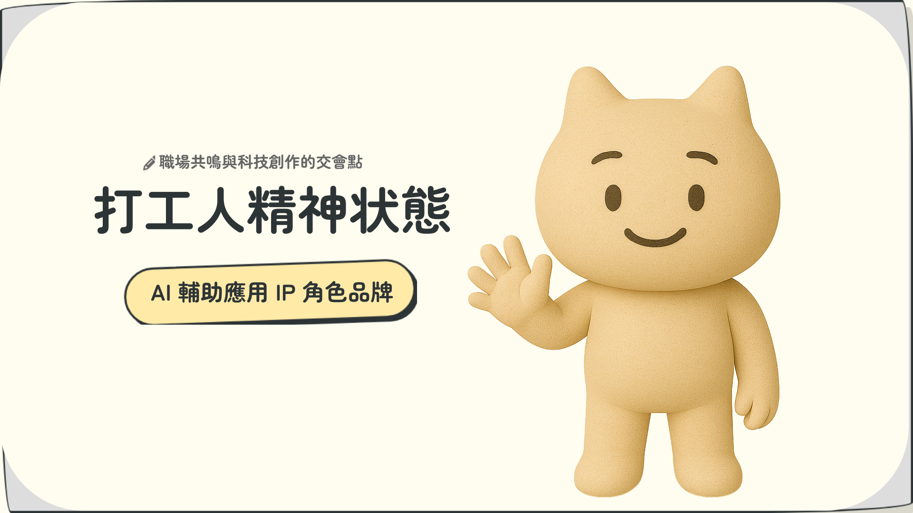
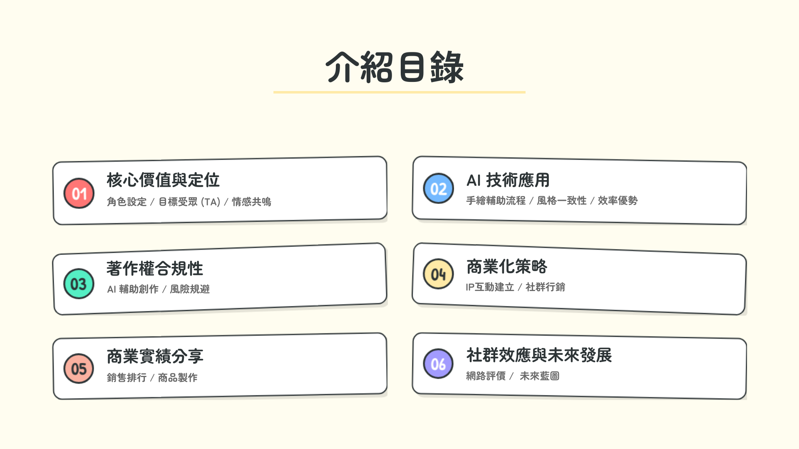
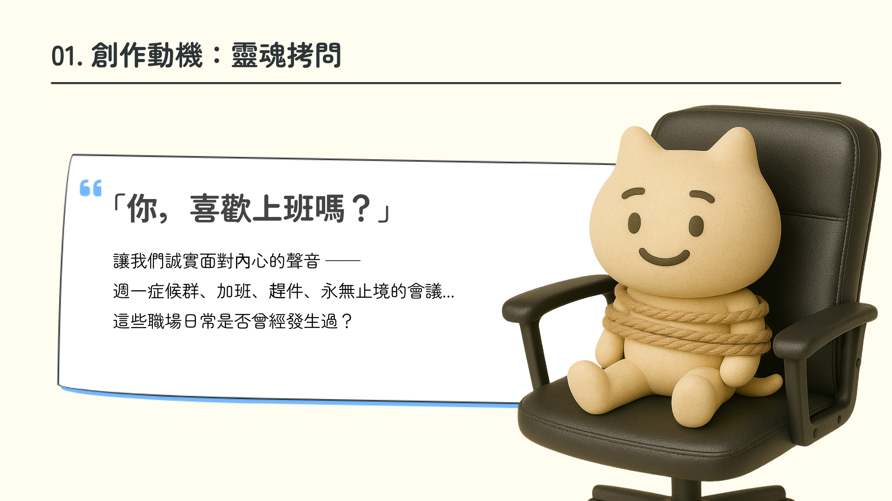

01 / Hero Visual
角色主視覺設定
聚焦品牌核心角色的神情、造型與情緒姿態，建立「一眼就懂今天上班狀態」的視覺辨識。
打工人精神狀態
這是一個以「疲憊、硬撐、苦中作樂」為核心情緒的品牌 IP，將打工人的真實精神狀態轉化為可視化角色、圖像語言與社群敘事，讓壓力被看見，也讓幽默成為識別。
Brand Core
崩潰感、共鳴感、傳播感
Visual Direction
高辨識角色輪廓、情緒標語、暖調極簡排版
Portfolio
以下作品區保留了可替換的主視覺位置，方便你後續直接替換成正式圖稿、貼圖企劃或角色延伸應用。

01 / Hero Visual
聚焦品牌核心角色的神情、造型與情緒姿態，建立「一眼就懂今天上班狀態」的視覺辨識。

02 / Story Scene
以會議、加班、薪水日與週一症候群為主題，把真實職場情境變成有戲的品牌內容模組。

03 / Social Assets
延伸成貼文模板、表情貼、桌布與週邊提案，讓品牌 IP 從展示頁自然走向日常使用場景。